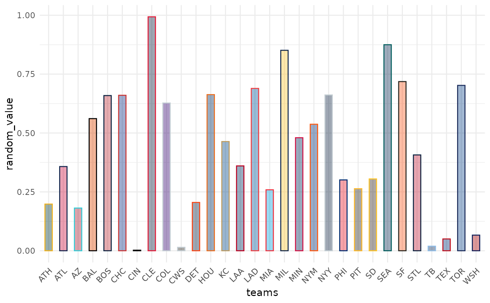

These functions map MLB team names to their team colors in color and fill aesthetics
Usage
scale_color_mlb(
type = c("primary", "secondary"),
values = NULL,
...,
aesthetics = "colour",
breaks = ggplot2::waiver(),
na.value = "grey50",
guide = NULL,
alpha = NA
)
scale_colour_mlb(
type = c("primary", "secondary"),
values = NULL,
...,
aesthetics = "colour",
breaks = ggplot2::waiver(),
na.value = "grey50",
guide = NULL,
alpha = NA
)
scale_fill_mlb(
type = c("primary", "secondary"),
values = NULL,
...,
aesthetics = "fill",
breaks = ggplot2::waiver(),
na.value = "grey50",
guide = NULL,
alpha = NA
)Arguments
- type
One of
"primary"or"secondary"to decide which colortype to use.- values
If
NULL(the default) use the internal team color vectors. Otherwise a set of aesthetic values to map data values to. The values will be matched in order (usually alphabetical) with the limits of the scale, or withbreaksif provided. If this is a named vector, then the values will be matched based on the names instead. Data values that don't match will be givenna.value.- ...
Arguments passed on to
discrete_scalelimitsOne of:
NULLto use the default scale valuesA character vector that defines possible values of the scale and their order
A function that accepts the existing (automatic) values and returns new ones. Also accepts rlang lambda function notation.
dropShould unused factor levels be omitted from the scale? The default,
TRUE, uses the levels that appear in the data;FALSEincludes the levels in the factor. Please note that to display every level in a legend, the layer should useshow.legend = TRUE.na.translateUnlike continuous scales, discrete scales can easily show missing values, and do so by default. If you want to remove missing values from a discrete scale, specify
na.translate = FALSE.nameThe name of the scale. Used as the axis or legend title. If
waiver(), the default, the name of the scale is taken from the first mapping used for that aesthetic. IfNULL, the legend title will be omitted.labelsOne of:
NULLfor no labelswaiver()for the default labels computed by the transformation objectA character vector giving labels (must be same length as
breaks)An expression vector (must be the same length as breaks). See ?plotmath for details.
A function that takes the breaks as input and returns labels as output. Also accepts rlang lambda function notation.
guideA function used to create a guide or its name. See
guides()for more information.callThe
callused to construct the scale for reporting messages.superThe super class to use for the constructed scale
- aesthetics
Character string or vector of character strings listing the name(s) of the aesthetic(s) that this scale works with. This can be useful, for example, to apply colour settings to the
colourandfillaesthetics at the same time, viaaesthetics = c("colour", "fill").- breaks
One of:
NULLfor no breakswaiver()for the default breaks (the scale limits)A character vector of breaks
A function that takes the limits as input and returns breaks as output
- na.value
The aesthetic value to use for missing (
NA) values- guide
A function used to create a guide or its name. If
NULL(the default) no guide will be plotted for this scale. Seeggplot2::guides()for more information.- alpha
Factor to modify color transparency via a call to
scales::alpha(). IfNA(the default) no transparency will be applied. Can also be a vector of alphas. All alpha levels must be in range[0,1].
Value
A discrete ggplot2 scale created with ggplot2::scale_color_manual() or
ggplot2::scale_fill_manual().
Examples
# \donttest{
library(mlbplotR)
library(ggplot2)
team_abbr <- valid_team_names()
# remove league logos from this example
team_abbr <- team_abbr[!team_abbr %in% c("AL", "NL", "MLB")]
df <- data.frame(
random_value = runif(length(team_abbr), 0, 1),
teams = team_abbr
)
ggplot(df, aes(x = teams, y = random_value)) +
geom_col(aes(color = teams, fill = teams), width = 0.5) +
scale_color_mlb(type = "secondary") +
scale_fill_mlb(alpha = 0.4) +
theme_minimal() +
theme(axis.text.x = element_text(angle = 45, hjust = 1))

# }